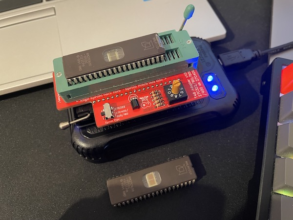
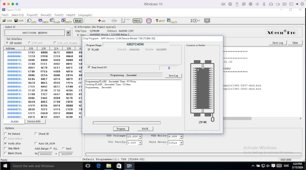
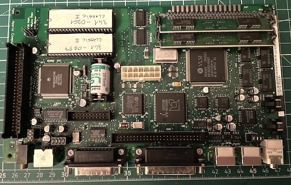
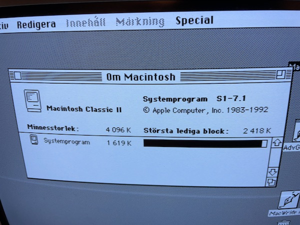

The Solana Vanishing Act
The Solana Vanishing Act
During the restoration of my Performa 200, I ended up getting another Classic II for parts, to be able to isolate the issue I was having. It turned out that the system ROMs were dead in my machine. I could replace the ROMs from the machine I got for parts, but then I started feeling bad about leaving that poor Classic II by itself and wanted to repair it too. I had to find a way to get new system ROMs. Unfortunately it's almost impossible to find vintage Macintosh ROMs for sale, so the only option was to make my own ROMs by programming EPROMs.
The system ROM in the Macintosh Classic II is 512Kb and it's in two 256Kb ICs. A compatible EPROM is the 512Kb AMD 27C400 DIP-40 and we need two of them. I bought mine from this eBay seller and I can verify that for me these worked.
The Vintage Macintosh ROMs can be found on the internet at several places, but the Classic II ROM file is 512Kb, so we need to split that into 2x256Kb before burning it. This website contains some useful information on the Classic II ROMs and it has a small command line program written in C called c2split.c, that can be used to split the ROM file into two. You can easily compile the program and use it from terminal on MacOS or Linux. But if you don't want to, here are the ROM files I splitted:
341-0257-mod.bin
341-0261-mod.bin
Now that we have the ROM files and the EPROM chips, we need a programmer to burn them. There are two EPROM programmers on the market I found people recommending, one is the GQ-4X4, the other is the TL866-II. Unfortunately the TL866-II (white unit) has been discontinued and replaced with the XGecu T48 (also called TL866-III). Even if most sellers or auctions claim to sell a TL866-II (or compatible), you'll most likely get a T48 (black unit), which is in many ways better, but in some ways worse, as it's incompatible with the old adapters. All of these EPROM programmers (even the GQ4x4) need an adapter to be able to burn 16-bit 27C400/800/160 EPROMs. The issue with this is that the socket on the T48 is wired slightly differently and it was rotated so it sits the other way around, which makes fitting the adapters made for the TL866-II impossible (you can't close the lever). Most adapters on auction sites were still made for the TL866-II and won't work with the T48.
Luckily there is now a 27C400/C800/C160 adapter for the T48 also, made by Gotek-retro. I decided to go with this solution as I'm in the EU and importing the GQ4x4 (and an adapter for it) from Canada seemed significantly more expensive. So I got an XGecu T48 from Amazon and the 27C400 adapter from Gotek-retro.
Burning the ROMs with the XGecu Pro software is not straight-forward, but not a rocket science either. I never did this before, but after some trial and error, I managed to figure it out. I was using my MacBook, running MacOS Ventura and Windows 10 in Parallels. If you're going to do the same, pay attention to when you connect the adapter to the USB port, Parallels will ask if you want to connect it to MacOS or Windows, choose Windows. You can get the XGecu Pro application from the official site.
Here is how I did it:
Insert the adapter into the T48 unit and the 27C400 EPROM into the socket according to the instructions on the board (align the EPROM towards the lever of the T48, with the notch facing the other way, towards the empty pins). Set the EPROM type switch to 27C400/800/160 and the bank switch to 0.

In the XGecu Pro software select the IC type and set it to AM27C4096 @ DIP40. This is very important. If you set it to 27C400, it won't work.
Click load in the toolbar and select the ROM file you want to burn. Leave every setting in loading window on default.
In the Options section of the main window, turn off every option except Verify After (so it will verify the result after the programming is complete). Set the VPP and VDD voltage value according to the specifications of the EPROM you bought (can be found on the manufacturer's website). It will likely be a value between 12.50V and 13.00V for VPP, 6.50V for VDD write and 5.00V for VCC verify. Puls Delay I left on the default 100us.
Now click on the PROG icon in the toolbar and start the programming. It will take a few minutes, but should result in a "Programming ...Succeeded" message. Replace the EPROM and do the same for the other file. Don't forget to label the EPROMs in a way that covers the UV sensitive opening on them and mark the notch on the label (if it covers it).

Pay attention to the orientation when inserting the ROMs into the logic board. The socket pin towards the ROM size selector jumper switch should be left empty and the notch on the ROMs should face in that direction too. The ROMs go into the follwing sockets:
341-0261 -> Socket U23
341-0257 -> Socket U22

It was a success, another Classic II saved:
